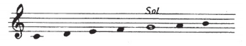
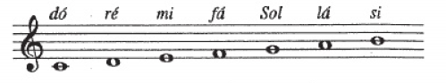
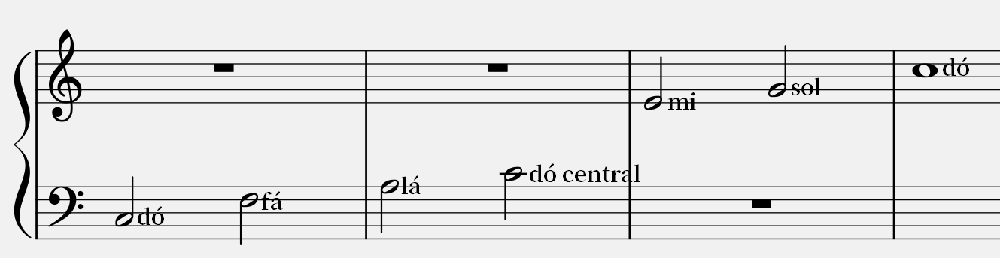
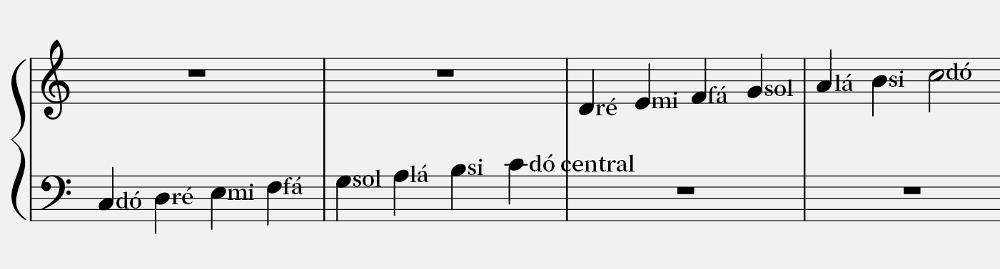

A música é escrita numa pauta musical. Na sua forma mais simples contém 5 linhas paralelas e 4 espaços e contam-se de baixo para cima. As notas são escritas em cima dos espaços e das linhas. Para determinar quais as notas que representam essas posições da pauta é necessário uma clave. A clave é colocada no inicio da pauta e assinala a posição da nota que essa mesma clave representa.
As claves mais usadas são a clave de Sol e a clave de Fá, mas a clave de Dó também é bastante popular em diversos instrumentos.
Como dá para ver na imagem, tendo sido colocado a clave de Sol, podemos agora ter uma noção da posição das notas e da sua altura. Os sons das notas vão subindo à medida que subimos na pauta. O inverso acontece ao descer, o som vai-se tornando mais grave.
Aqui estão as notas preenchidas, usando a clave de Sol para nos guiar. Percebe-se que existe uma nota que não está enquadrada na pauta, a nota dó. Não está em nenhuma linha nem espaço da pauta, então tem que se adicionar linhas adicionais neste caso para facilitar a leitura. O dó representado na imagem é chamado de dó central porque é facilmente partilhado pela clave de Sol e de Fá. Estas 2 claves aparecem juntas frequentemente, sendo obrigatório em musica para piano, que usa simultaneamente estas 2 claves.
A nota dó aparece 3 vezes na imagem anterior, mas não são exatamente iguais. A nota repete sim, mas em oitavas diferentes. O dó na clave de Fá é 1 oitava mais grave que o dó central. O dó na clave de Sol é 1 oitava mais alta que o dó central. Completamos então o nome das notas da seguinte forma:
Aqui percebe-se que o dó central é facilmente partilhado pelas 2 claves, faz a ligação entre uma e a outra.